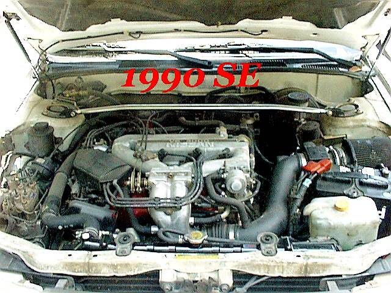
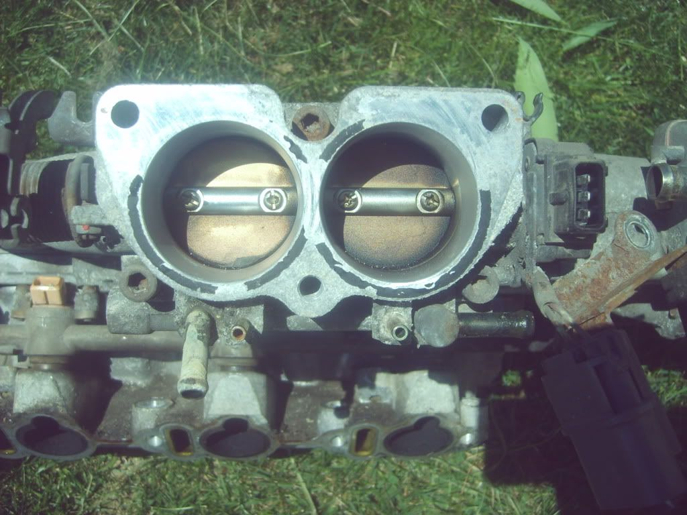
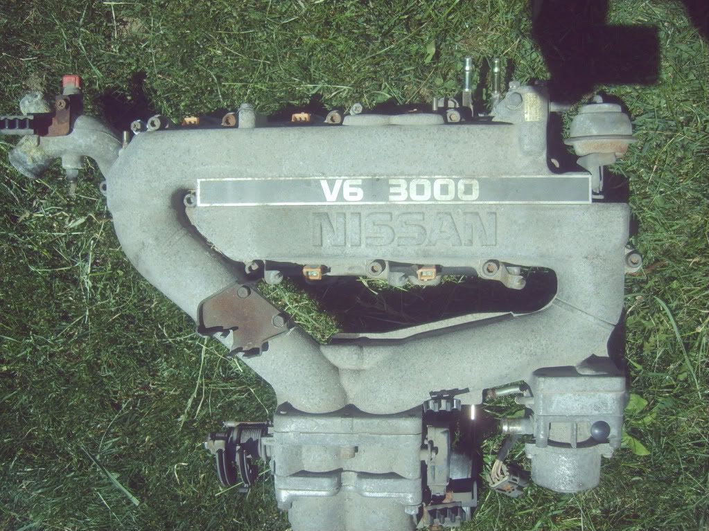
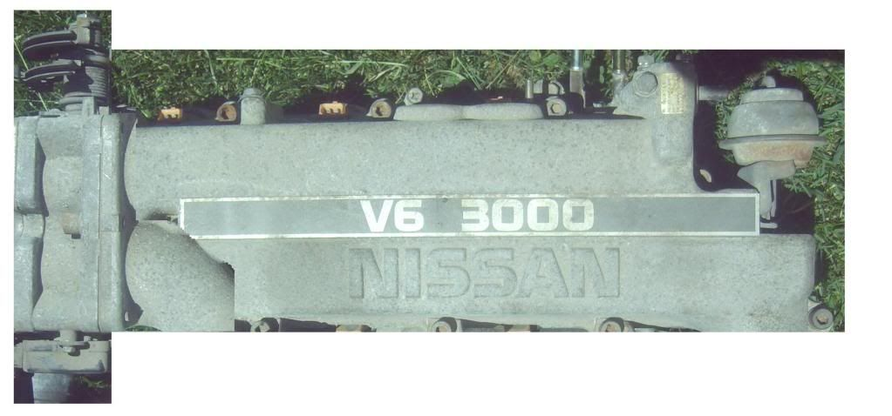

-
so I have a 91 Maxima for parts, I'm intending on using the dual log intake on my Z, and since the inlet would turn to the back of the car I know I'd need to cut it off and turn the bend to face the front of the car. Has anyone used this intake and how did they like it?
I am thinking that the intake manifold itself has has too many bends. Right off the top of the plenum has a bend nearly 180 degrees on each side for each log, then bends to mount to the TB. Leaving the TB it bends down nearly 90 degrees, then bends another 90 degrees to face the drivers side (back for our cars) then more bends in the plastic piping to the MAF and filter box. This is the example of what I mean.

So since I have to cut and weld to flip that bend anyway, why not cut the piping right off, weld up the holes, and open the pass. side, which would be the front on out cars, and weld on the part right before the TB? From there it's be similar mounting as the older style Maxima intake with the TB on the front, but with dual log setup and all the other benefits from that dual log manifold. In theory though less bends, less distance allowing less restriction. I haven't seen anyone try this but thought I'd see if anyone on here has. Also would like to hear peoples thoughts and opinions (except useless shit on my thread opinions) as to how this would work. -
The JDM Cedrics and Glorias of the same era used the same manifold, but the elbow is a mirror of the Maxima and faces foward like it needs to in a Z.
1986 300ZX Turbo…sold
1990 Skyline GT-R…new money pit
2014 Juke Nismo RS 6-speed…daily -
or could you mount the whole plenum 180 degrees around, so the original inlet that would have been pointing to the rear, would point to the front. do some manifold heat shielding, and run intercooler piping right into it - between alt and p/s pump?Damn dirty angels....these cars!
Current Daily Driver - 86 Turbo.
Under the cover - THE BANANA… that needs to be re-energized.
sigpic -
i tried using one of these on my 86T and it hit the strut tower. these plenums are designed for the room of a transverse-mounted engine and the go over the center of the valve cover and then down, where as our plenums go over the back of our valve cover where there is more room away from both the hood and the strut tower. im not saying it cant be done, (you can do anything with a big enough hammer!) but there will be issues with it if you dont want to beat the shit out of your.
-
It won't go on backwards, so no that's not an option, I can cut and weld, but even aside from that, I'm talking about it not going down even, if you look at it, off either end of each log the piping runs with so many bends it seems insane, I'm talking about cutting off each end of each log, covering the holes, then cut a hole in the front to weld the spot right before the TB to. I think this would sit similar to the 2nd gen manifold, but still retain the dual log and twin TB style. The part that bands down after the TB would be removed and like I said, sit similar to a 2nd gen plenum. At least that's the theory. I think the dual log style will allow much more even flow and more response. If I can mount the intake mouth to the front it would removed 9 bends and a few feet worth of piping even in a Maxima application. Only difference is that in a Max it'd have to be on the back not the front. I figure I've got the parts for free, why not try it. It would become a custom manifold at that point, but based on the 3rd gen and 2nd gen manifold. If this doesn't make sense I'll try to create a pic of what it would look like in the end. -
i see what your saying having a a TB for each bank of runners. but are you going to keep the "2 in 1" style twin TB or run 2 separate small TB's and make a split in your intake/ IC piping?Richard_85ZXT wrote: It won't go on backwards, so no that's not an option, I can cut and weld, but even aside from that, I'm talking about it not going down even, if you look at it, off either end of each log the piping runs with so many bends it seems insane, I'm talking about cutting off each end of each log, covering the holes, then cut a hole in the front to weld the spot right before the TB to. I think this would sit similar to the 2nd gen manifold, but still retain the dual log and twin TB style. The part that bands down after the TB would be removed and like I said, sit similar to a 2nd gen plenum. At least that's the theory. I think the dual log style will allow much more even flow and more response. If I can mount the intake mouth to the front it would removed 9 bends and a few feet worth of piping even in a Maxima application. Only difference is that in a Max it'd have to be on the back not the front. I figure I've got the parts for free, why not try it. It would become a custom manifold at that point, but based on the 3rd gen and 2nd gen manifold. If this doesn't make sense I'll try to create a pic of what it would look like in the end.
seems to me like the dual TB setup would work better that the 2 in 1. is that stock TB tubed separately before the flaps or is it all one tube with 2 flaps? if its not tubed separately and you try to run an oval-shaped IC/intake tube to it, it would disrupt flow by hitting the space by hitting the space between the flaps and creating cavitation(i think its what its called?) and forcing the incoming air back on itself, kind of like when your headers primary diameter is smaller than your exhaust ports, you get the idea. -
you got it, I was thinking the original TB because as I understood it they are separated as 2, but I haven't taken it off yet to make sure, I'll find out. I think that would be a worthwhile manifold, I mean there's even a pair of butterfly valves in between the logs, so it's much more thought out than the 2nd gen manifold. So if I can have it mount like the 2nd gen, but flow like the 3rd gen, it seems like a win win. -
seems to me the VG would benefit greatly from any sort of split-port/split-bank intakes. im anxious to see how this turns out.Richard_85ZXT wrote: you got it, I was thinking the original TB because as I understood it they are separated as 2, but I haven't taken it off yet to make sure, I'll find out. I think that would be a worthwhile manifold, I mean there's even a pair of butterfly valves in between the logs, so it's much more thought out than the 2nd gen manifold. So if I can have it mount like the 2nd gen, but flow like the 3rd gen, it seems like a win win.
if it works would yoube interested in making and or selling a few of these? i know i'd be in line for one. seems cheaper and easier than say an engloid plenum or a gutted 2nd gen plenum -
I doubt I'd go that far, I've got one sitting here, I'll try it out and if it works the way I'd hope it does than I'll be more than happy to share any knowledge I've gained. I don't have welding equipment so I'll be having my cousin work on it at his work, and he'll probably do a bit of machining otherwise too. He may be interested on making some and selling them if it works well, but we'll see. I'll have to see if he has access to flow test it both before and after to compare. -
This is very interesting, I'll be following this! There are many of these available at the local JY.
http://www.utahzclub.com
Do you type by throwing chopsticks at a keyboard that is spinning or something?
Troll, troll, troll your post, Gently down the feed. Merrily, merrily troll along, A life is what you need! -
Ok, so I've come accross a couple issues with this as of right now, I don't think either are major, but just so people are aware. First the upper plenum is 2 pieces are requires a gasket between them, so either would need a custom gasket made, run some liquid gasket on there, or weld it all up. Second is that due to the dual log style the lower intake manifold is required as well, and the coolant inlet sits on what would be our front side and comes up rather high. It could be in the way or even if not in the way could just be a PITA there. Both of these are not huge issues by any means, but if someone else wanted to do this they'd want to know both of those things. Good news is the TBs are separate so the stock TB would be like running 2.
 -
so now for my mad ms paint skillZ!!!! I chopped and moved things around to get a general idea of what I'd be looking at, not pretty, but gets the idea across anyway. I'll see if I can get a photoshopped version of this so it makes more sense, but this should do fine.
Before

After
 -
I'm liking it already. -
for your car it'd be even better turbodreams, put it on the other side and run strait to the stock air filter location saving a TON of bends and about 3 feet of piping. -
I hhave other plans to move my intake filter to the front driver side fender, main problem with that is that's where the charcoal canister is, but I can probably relocate that fairly easily. I also intend to move my battery and fusible links and shit into the same area of the fender, that way I have a lower center of gravity, a clean engine bay and I still have my front-heavy weight distribution (needed for understeer happy FWD cars).

Copyright © 2006–. All rights reserved. Privacy Policy